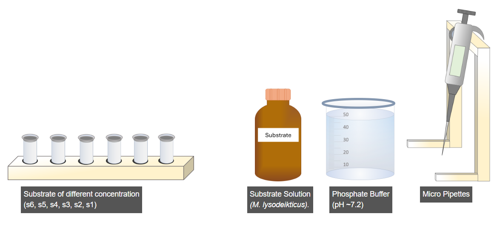
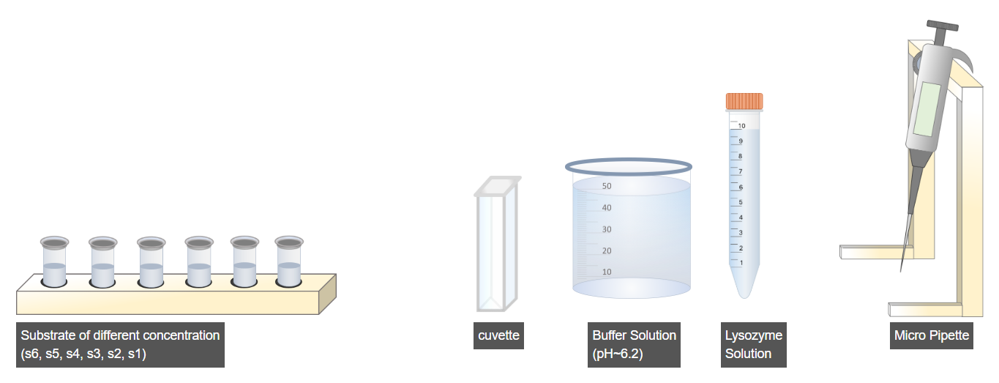
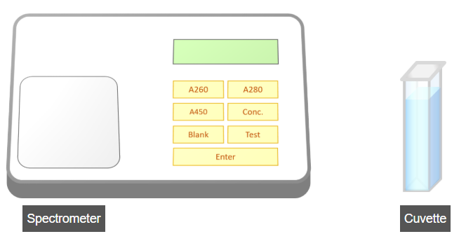

Experimental Procedure for Determination of Km and Vmax (Enzyme Kinetics)

A. Preparation of Substrate Solutions of Different Concentrations
- Select the rack of microcentrifuge tubes.
- Select the micropipette.
- Set the micropipette volume to 5 µL using the adjustment wheel.
- Pipette 5 µL of substrate solution into each microcentrifuge tube.
- Adjust the micropipette volume to 995 µL to measure the buffer solution.
- Pipette 995 µL of buffer solution into the same tubes to obtain a final volume of 1 mL with a concentration of 0.5 mM substrate (as per the table).
- Click the Run option to prepare the remaining substrate solutions of different concentrations according to the given table.
- Proceed to the next step.

B. Enzyme–Substrate Reaction Setup
- Select the prepared substrate rack.
- Choose the micropipette.
- Set the micropipette volume to 5 µL and transfer 5 µL of substrate into a clean cuvette.
- Adjust the micropipette volume to 895 µL to measure the buffer solution.
- Transfer 895 µL of buffer solution into the same cuvette.
- Set the micropipette volume to 100 µL to measure the enzyme solution.
- Add 100 µL of lysozyme enzyme solution into the cuvette.
- Immediately proceed for absorbance measurement after enzyme addition.

C. Measurement of Absorbance at 450 nm
- Open the spectrometer lid.
- Insert the micro-cuvette containing the reaction mixture into the spectrometer.
- Set the instrument to Test mode by pressing the Test button.
- Press the A450 button to record the absorbance at 450 nm.
- Note the absorbance reading every 30 seconds.
- Click Next Step to proceed with the enzyme kinetics analysis for determination of Km and Vmax.